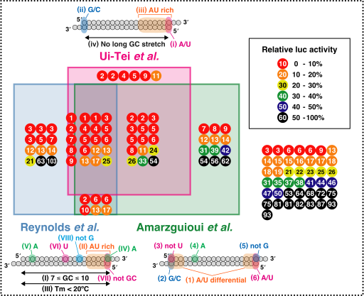

Selection of highly functional siRNAs
- Ui-Tei K, Naito Y, Takahashi F, Haraguchi T, Ohki-Hamazaki H, Juni A, Ueda R, Saigo K. (2004)
Guidelines for the selection of highly effective siRNA sequences for mammalian and chick RNA interference.
Nucleic Acids Res., 32, 936-948.
- Reynolds A, Leake D, Boese Q, Scaringe S, Marshall WS, Khvorova A. (2004)
Rational siRNA design for RNA interference.
Nat. Biotechnol., 22, 326-330.
- Amarzguioui M, Prydz H. (2004)
An algorithm for selection of functional siRNA sequences.
Biochem. Biophys. Res. Commun., 316, 1050-1058.
Validation of siRNA selection algorithms

References
- Naito Y, Saigo K, Ui-Tei K. (2008)
Evaluation of published rational siRNA design algorithms using firefly luciferase gene as a reporter.
RNA interference research progress, 3-11.